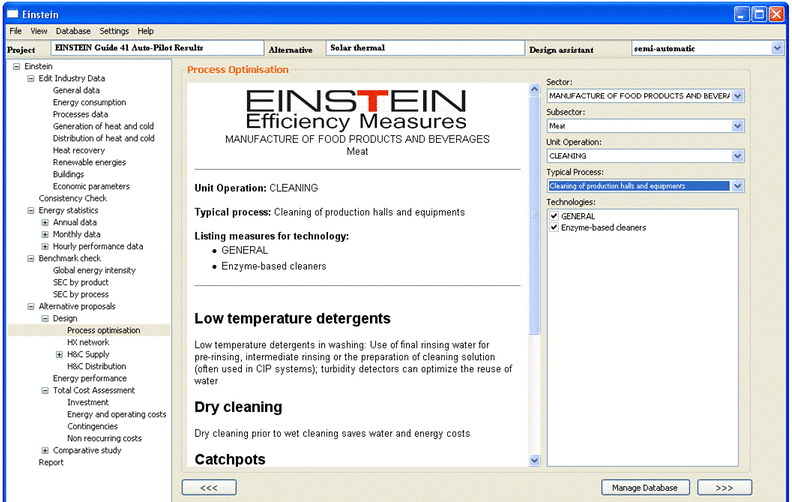
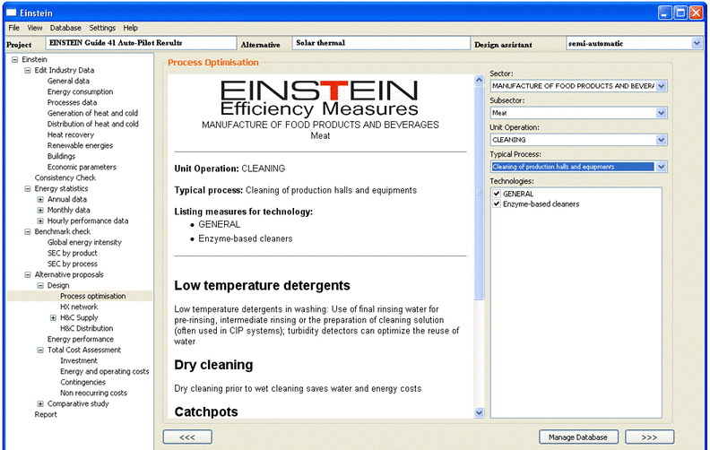

User Manual
Chapter 7: Process Optimization
After the energy demand data has
been collected and documented, the first step after the analysis and the
benchmarking step is to show the user the
possibilities with which energy savings measures the production processes could
be energetically improved.
In the process optimization, the
users can order the energy efficiency measures for their current technology
or/and other technologies with the corresponding energy efficiency measures
which could become the energy efficiency alternatives for their process in the
future. There are 4 search categories divided into 2 groups: sector/sub-sector
and process/sub-process. Users have to go through all these search categories
to select the sector and sub-sector their production belongs to, and the unit
operation and typical process you would like to refer the energy efficiency
technologies and measures. Then in the Technologies dialogue, all the possible
technologies corresponding to the chosen item are viewed. By checking the
checkbox of the technologies, the respective energy efficiency measures with a
short description will be shown in the centre window.
 

Figure 7.1 The general user interface of the process optimization module
For further information on the
proposed technologies and efficiency measures proposed, a link to a Wiki Web on
Energy Efficiency can be followed. On this Wiki Web the Matrix of Industrial
process Indicators (developed within the IEA Task 33) is published, and the sections
on competitive technologies is continuously extended to include more details
efficient technologies and best available techniques.